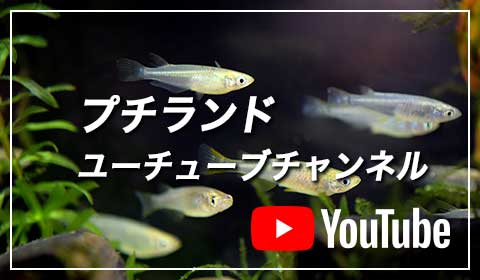

メダカの寿命は自然環境下では1～2年、飼育環境下では2～3年です。厳しい自然環境下ではエサ不足や汚れた水の流入、洪水や減水などの生息環境の大きな変化に遭ったり、天敵に襲われたりすることで多くのメダカが1～2年で命を落とします。適切な飼育をされている環境下ではそれらの危険が減ったり、なくなったりするため2～3年生きます。安定した環境であまり体力を使わせずにできる限りストレスを与えなければ4年も生きる個体もいます。近年のインブリード系統は体質が弱くなっている傾向があるため、3年生きると長寿と言えます
プチランドで販売するメダカは全て日本メダカの改良種です。熱帯魚店で売られている熱帯性の海外メダカとはその基本的性質（卵胎生など）から根本的に異なります。海外産のメダカで、日本で知られているものとしてはグッピーなどが挙げられます。海外産のメダカたちのような鮮やかな体色のメダカではございません。古来から日本に生息するニホンメダカの血を引くメダカですので、日本の風土が生み出した柔らかな色合いが特徴です。
どちらも一長一短です。屋内飼育は藻が生えにくかったり、ガラス水槽など横から見ることが出来て楽しかったり管理する面でも容易ですが、メダカに必要な太陽光が不足気味になるのでわりと短命であったり産卵数も伸びなかったりします。屋外飼育は太陽光を豊富に得られるのでメダカの体調も良い傾向にあり、産卵も生育も屋内飼育よりしやすいです。 ただ春夏秋冬さまざまな天気の影響をもろに受けますので管理がしにくいという面もあります。
朝はまず天気と気温、水温チェックをします。それからエサを与えてメダカの健康と産卵チェックをして、産卵していたら採卵します。採卵が終わる頃には気温と水温ともに上昇して、前日に採卵した卵の孵化が始まります。孵化した個体を卵保管用の小さい容器から稚魚用水槽に移動させます。引き続き天気と気温、水温チェックを一定時間ごとに行ない、正午頃にまたエサを与えます。それからまた天気と気温、水温チェックを続けて夕方にエサを与えて一日の世話が終わります。水替えや水足しが必要であれば産卵や採卵に影響の少ない午後に行ないます。温室管理をしている場合は朝に開放、夕方に閉鎖の作業が必要になります。
まずはメダカが袋に入ったままの状態で水槽に浮かべて温度を合わせます。酸素パッキングされていない場合や気温が高い場合は酸欠を起こす可能性があるため、封を開けてから浮かべます。水温が同じになったら、次は袋の中に水槽の水を少量ずつ入れつつ袋の中の水を少量ずつ水槽外に捨てていき、袋の中の水を徐々に水槽の水に入れ替えて水質に慣れさせます。30分～1時間ほどかけて水質を合わせたら小さな容器に袋の中身を出して網でメダカのみを掬って水槽に投入します。
メダカ飼育で失敗しにくい水温は18～28℃です。18℃以下ではメダカの活性が低いためにエサ食いが悪く育ちにくく、消化が進みにくいために消化不良を起こしやすくなります。また、水中微生物の活性も低いためにメダカに適した環境が整いにくくなります。28℃以上ではメダカの活性が上がりすぎて体力の消耗が激しくなります。また、高温による体調不良や水中の溶存酸素量の低下により酸欠の危険性が高まります。さらにメダカ以外の水中微生物の活動も盛んになるため、それらの大量発生や大量死滅などにより水質の急変や酸欠になる危険性もあります。
水道水を使用する際に注意することは、生体を投入する前に水道水に含まれる塩素や使用されている配管によっては含まれる重金属類を無害化させることです。塩素は水道水を1日以上日光に当てて塩素を光分解させるか、観賞魚用の塩素中和剤を使用して中和させて無害化させます。重金属は観賞魚用の重金属調整剤を使用して無害化させます。塩素中和剤と重金属調整剤の使用方法は製品によって異なるため、製品の使用方法をよく読んでから使用しましょう。
春から秋にかけては一日に2回、朝と夕方にしっかりと全個体に行き渡るように、かつ食べ残しがあまりないように与えるとよいでしょう。しかし1回で食べる量が多いことは消化不良の原因になることがあるため、可能であれば1回の量を「少し足りないかな？」と思うくらいの量にして、全個体に行き渡っているのを確認しながら一日3?5回程度に分けて与えるとよいでしょう。冬はメダカが水面近くに上がってくるような暖かい日は一日で一番暖かい時間帯(一般的には13?15時頃)に1回、少量を与えます。
メダカには保護色機能といって、外敵から身を守るために、周囲の色に自らの体の色を合わせようとする機能が備わっています（点目系除く）。もともと濃い体色の種類のメダカでも、薄い色（白色など）の飼育容器や、ガラス水槽などのように周囲が透明な容器の場合、メダカの体色もそれに合わせて薄くなりがちです。色を楽しみにメダカの飼育をされる場合、濃い色の容器に入れて飼育されることをお勧めいたします。
通常、ダルマメダカとは背骨の数が普通のメダカの2/3以下のものを言うと思いますが、半ダルマメダカは2/3以下ほど少なくなく、かといって普通のメダカほど背骨の数が多くはないもの、といった感じでしょうか。繁殖目的の方が多く購入されてゆく傾向があるのは、ダルマメダカよりも丈夫で、産卵もしやすいことが挙げられるかと思います（一説にはダルマメダカが生まれやすい、ということも言われているようです）。